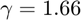
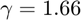

rayleigh_heat_inverse
Determines the stagnation temperature at one station in a Rayleigh flow given the stagnation temperature at the other station and the (specific) heat addition between the two stations.
Back to Compressible Flow Toolbox Contents
Contents
- Syntax
- Input/Output Parameters
- Example #1: Station 1 stagnation temperature for specific heat addition in air.
- Example #2: Station 2 stagnation temperature for specific heat addition in air.
- Example #3: Station 1 stagnation temperature for specific heat addition in helium.
- Example #4: Station 2 stagnation temperature for specific heat addition in helium.
- See also
Syntax
Tt1 = rayleigh_heat_inverse('Tt2',Tt2,q) Tt1 = rayleigh_heat_inverse('Tt2',Tt2,q,gamma,R) Tt2 = rayleigh_heat_inverse('Tt1',Tt1,q) Tt2 = rayleigh_heat_inverse('Tt1',Tt1,q,gamma,R)
Input/Output Parameters
| Symbol | Variable | Description | Format | Units | |
| Input | - | spec | specifies input stagnation temperature ('Tt1' or 'Tt2') | char | - |
| Tt_in | input stagnation temperature | 1×1 double |
K | ||
| q | (specific) heat addition between stations 1 and 2 | 1×1 double |
J/kg | ||
| gamma | (OPTIONAL) specific heat ratio, defaults to 1.4 | 1×1 double |
- | ||
| R | (OPTIONAL) specific gas constant, defaults to 287 J/(kg.K) | 1×1 double |
J/(kg.K) | ||
| Output | Tt_out | output stagnation temperature | 1×1 double |
K |
Example #1: Station 1 stagnation temperature for specific heat addition in air.
$T{t1}$ with and (in air)._
Tt2 = 2000;
q = 1.0045e6;
Tt1 = rayleigh_heat_inverse('Tt2',Tt2,q)
Tt1 = 1.0000e+03
Example #2: Station 2 stagnation temperature for specific heat addition in air.
$T{t2}$ with and (in air)._
Tt1 = 1000;
q = 1.0045e6;
Tt2 = rayleigh_heat_inverse('Tt1',Tt1,q)
Tt2 = 2.0000e+03
Example #3: Station 1 stagnation temperature for specific heat addition in helium.
$T{t1}$ with and  (in helium, with , )._
(in helium, with , )._
Tt2 = 2000;
q = 5.2240e6;
Tt1 = rayleigh_heat_inverse('Tt2',Tt2,q,1.66,2077)
Tt1 = 999.9942
Example #4: Station 2 stagnation temperature for specific heat addition in helium.
$T{t2}$ with and (in helium, with and )._
Tt1 = 1000;
q = 5.2240e6;
Tt2 = rayleigh_heat_inverse('Tt1',Tt1,q,1.66,2077)
Tt2 = 2.0000e+03